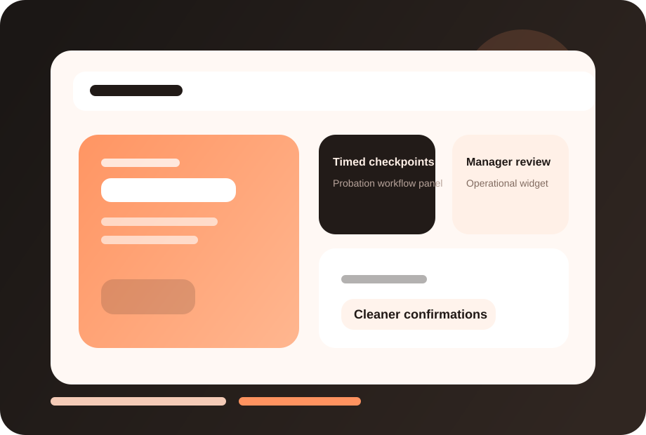

Better accountability
Managers review employees on time with clear prompts and structure.
FuzionHR helps teams run structured probation checkpoints so employee confirmations are based on visible feedback, not delayed memory.

This page now has a dedicated visual treatment, stronger readability, and screenshot-ready product areas so you can drop in actual FuzionHR UI captures later.
Clearer module identity and stronger visual recognition.
Dedicated screenshot frames for real product views.
Structure remains intact while the design feels richer.
Managers review employees on time with clear prompts and structure.
HR can support confirmation calls with recorded evidence and context.
Early feedback becomes a growth tool rather than a late-stage surprise.
These screenshot frames are placeholders for your actual product UI. Once you share real captures, we can place them here with polished annotations.
Replace this frame with your real product screenshot to show the live FuzionHR UI.
Use this area for dashboards, approvals, reports or employee-facing views.